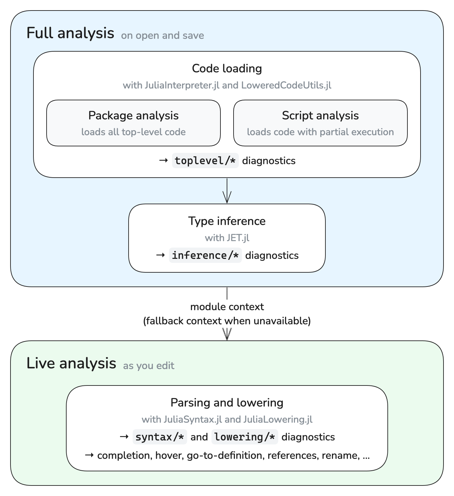
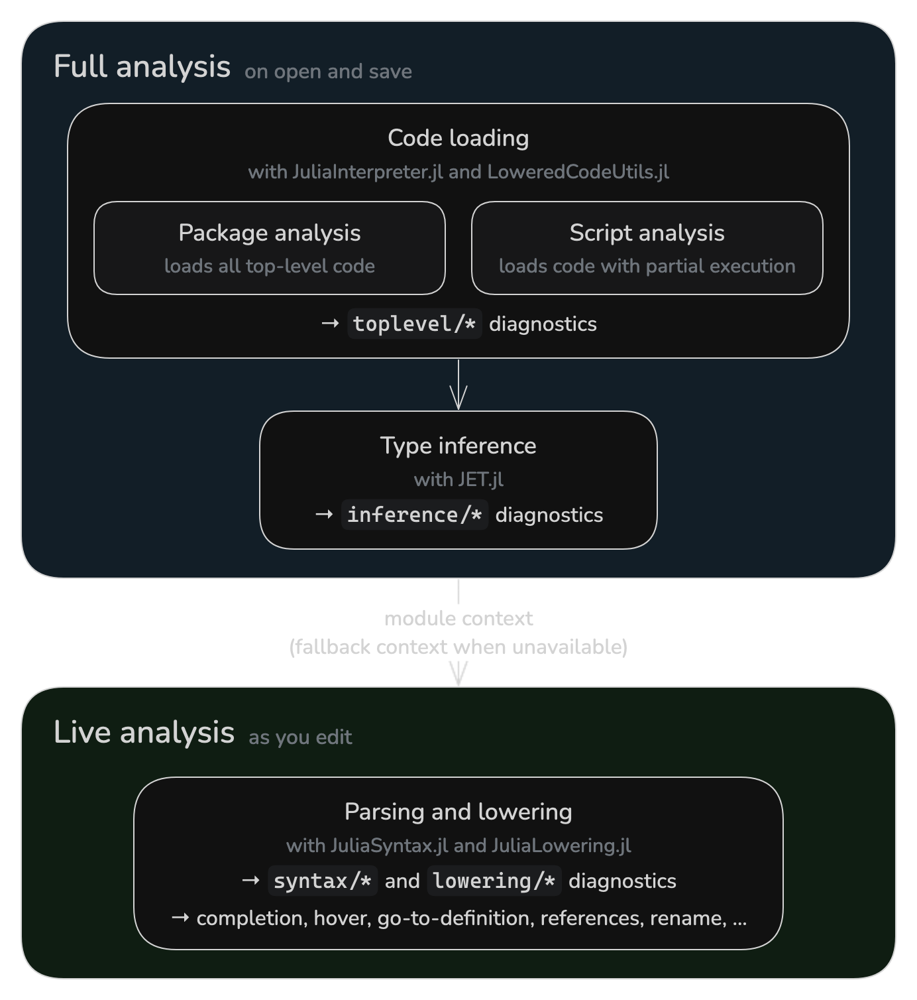

Analysis
JETLS analyzes your code in two layers:
- Full analysis runs when you open or save a file. It loads your code, either as a package or as a script, and runs type inference on it, reporting
toplevel/*andinference/*diagnostics. - Live analysis runs as you edit. It parses and lowers each file, reporting
syntax/*andlowering/*diagnostics, and powers language features such as completion and go-to-definition.
The two layers are connected by the module context: full analysis records the module each part of a file is evaluated in, and live analysis uses it to resolve the macros and global names that the file refers to. The following diagram summarizes this structure:


Full analysis describes how JETLS loads your code and which files it covers. Live analysis describes how live analysis depends on full analysis, including what remains available for files that full analysis does not cover.
Full analysis
Full analysis consists of two steps:
- Code loading: JuliaInterpreter.jl interprets the top-level code to load your code, while LoweredCodeUtils.jl selects the code to execute in script analysis. Loading stops at the first top-level error, and code after it is not analyzed. This step reports
toplevel/*diagnostics. - Type inference: JET.jl analyzes the loaded code based on Julia's type inference and reports
inference/*diagnostics.
Both kinds of diagnostics are delivered through the JETLS/save source.
Full analysis works on analysis units. Each unit starts from an entry file, such as the entry file of a package or a script, and covers the entry file and every file reachable from it through include.
Full analysis runs your top-level code and the dependency packages it loads, both of which can execute arbitrary code. Live analysis can also execute macro code during macro expansion. Neither layer is a sandbox; do not run JETLS on code you do not trust.
Full analysis modes
Full analysis loads an analysis unit in one of two ways. In both, the dependency packages your code loads are loaded unconditionally. The comments in the following example show which top-level code each mode executes:
using Statistics # package: executed, script: executed
data = rand(10) # package: executed, script: not executed
struct Point # package: executed, script: executed
x::Float64
end
norm2(p::Point) = p.x^2 # package: executed, script: executed
println(mean(data)) # package: executed, script: not executedPackage analysis
Package analysis executes all top-level code of a package unconditionally, then runs type inference on the loaded code. In the example above, it also runs println(mean(data)), so an error in such code is reported as toplevel/error.
Script analysis
Script analysis loads a script with partial execution: it executes only the top-level code needed to load definitions such as types, methods, and macros, and runs type inference on the rest without running it. In the example above, it defines Point and norm2 but only infers data = rand(10) and println(mean(data)), so an error in such code is reported as an inference/* diagnostic.
Since script analysis does not execute such assignments, a definition that needs the value of the assigned binding cannot be loaded unless that value can be inferred. Otherwise, JETLS reports toplevel/missing-concretization:
read_config() = Base.get_bool_env("USE_FLOAT64", true; throw=true)
data = rand(read_config() ? Float64 : Float32, 10)
struct Samples
values::typeof(data) # toplevel/missing-concretization
endSee [full_analysis] concretization_patterns for how to let JETLS evaluate such bindings.
How each file is analyzed
JETLS decides which analysis unit a file belongs to, and whether the unit is loaded with package analysis or script analysis, based on the nearest Project.toml found by searching upward from the file's directory, and on the file's location relative to it:
| File | Entry file | Analysis mode | Environment |
|---|---|---|---|
Package source file (under src/) | src/<name>.jl | Package analysis | The package environment |
Package test file (under test/) | test/runtests.jl | Script analysis | The package environment |
Package extension file (under ext/) | — | No full analysis | — |
| Other file in an environment | The opened file | Script analysis | The environment of the Project.toml |
File without a Project.toml | The opened file | Script analysis | No project (the default environment) |
Here, a package is an environment whose Project.toml has a name entry, and the package rows apply to the directories next to that Project.toml. In addition:
- For package extension files, JETLS reports
toplevel/analysis-skipped(see Files without full analysis). - Other files in an environment include files in a package outside
src/,test/, andext/, and files in an environment whoseProject.tomlhas nonameentry. - A standalone script is analyzed together with the files it includes. Opening a standalone script that no earlier analysis covers makes it the entry file of a new unit. For example, if
scripts/main.jlincludesscripts/utils.jl, openingscripts/main.jlanalyzes both files together, while openingscripts/utils.jlfirst analyzes it alone, without whatscripts/main.jldefines before including it. - A file without a
Project.tomlis analyzed asjulia script.jlwould run it: dependency packages are loaded from the default environment (e.g.@v1.13) and the standard library.
Some documents are handled differently:
| Document | Entry file | Analysis mode | Environment |
|---|---|---|---|
| Unsaved (untitled) buffer[unsaved_buffers] | The buffer | Script analysis | The environment of the workspace root |
| Notebook | The notebook | Script analysis | The environment of the notebook file |
| File outside the workspace root | — | No full analysis | — |
| File opened without a workspace folder | The opened file | Script analysis | No project (the default environment) |
A notebook is analyzed with all its cells as a single script (see Notebook support). For files outside the workspace root, see Files without full analysis.
jetls check analyzes files in the same way, except that it also analyzes files outside the root path (see Input paths and analysis mode).
When full analysis runs
Full analysis works on whole units. JETLS requests it in the following cases:
- When you open a file that no full analysis covers yet. Opening a file that an earlier analysis already covers, e.g. another file of an analyzed package, reuses that result.
- When you save a file. JETLS schedules reanalysis of the unit the file belongs to, such as the entire package for a package source file. Saves are debounced per unit: JETLS waits for
[full_analysis] debounceseconds without another save in that unit before queuing the request. - For unsaved buffers, which are never saved, after each edit, with a fixed debounce of 3 seconds.
- For notebooks, when the notebook is opened and when it is saved.
- When
[full_analysis] concretization_patternsor[full_analysis] concretization_timeoutchanges, for every unit that has been analyzed.
Reanalysis is skipped if any previously analyzed file in the unit has a saved syntax error. This can prevent full-analysis diagnostics from updating even when you save another, syntactically valid file in the same unit. Fix the syntax errors and save the affected files to allow full analysis to run again.
The first full analysis in a package environment may require the environment to be instantiated. See [full_analysis] auto_instantiate for how JETLS handles that.
Excluding files from full analysis
The analysis_overrides initialization option excludes the matched files from full analysis:
[[initialization_options.analysis_overrides]]
path = "test/fixtures/**"Excluded files are handled as described in Files without full analysis.
analysis_overrides is provided as a temporary workaround and may be removed or changed at any time.
Live analysis
Live analysis parses and lowers your code with JuliaSyntax.jl and JuliaLowering.jl, without loading the file as a package or script. Macro expansion can still execute macro code. Live analysis reports syntax/* and lowering/* diagnostics, delivered through the JETLS/live source, and powers most language features, such as completion, hover, go-to-definition, references, and rename.
Live analysis runs whenever the contents of an open file change. It also analyzes files you have not opened, as long as full analysis covers them, e.g. the other files of a package once you open one of them (see [diagnostic] all_files).
Since live analysis takes the module context from full analysis, some of its results depend on full analysis: the lowering/* diagnostics that depend on the module context, such as lowering/undef-global-var, are reported only once full analysis has established the module context of the file. JETLS then refreshes the live diagnostics to include them, so they appear without further edits. Global names are likewise resolved against the definitions that full analysis has loaded, except that completion of global names also offers the global names defined by the current contents of files in in the same analysis unit. Hover and type inlay hints also run type inference on the current top-level form on demand in that context.
Files without full analysis
Full analysis does not cover the following files:
- Files outside the workspace root, such as the source of a dependency opened through go-to-definition
- Package extension files (see How each file is analyzed)
- Files that are not reachable through
includefrom the entry file of any analysis unit, such as a file undersrc/that the package does not include - Files excluded with
analysis_overrides - Any file until its first full analysis completes
For these files, live analysis uses a fallback module context in place of the one full analysis would establish. The fallback context provides the names of Base and of the Test standard library, but none of the names the file itself imports. As a result:
syntax/*diagnostics and thelowering/*diagnostics that do not depend on the module context, such as unused or undefined local variables and unreachable code, are reported as usual.- The
lowering/*diagnostics that depend on the module context, such aslowering/undef-global-var,lowering/unused-import, andlowering/macro-expansion-error, are not reported. Neither aretoplevel/*andinference/*diagnostics, which come from full analysis. - Go-to-definition, references, and rename keep working for local variables, including inside
@testsetand other macros available in the fallback context. The arguments of other macro calls are analyzed approximately, as if they were written without the macro. For global names, these features only consider the file itself. - Completion of global names offers the names available in the fallback context and the global names that the file itself defines.
- Hover and type inlay hints may give incomplete results.
- unsaved_buffers
How unsaved buffers are represented depends on the client. JETLS supports unsaved buffers with the following URI schemes:
untitled:(VSCode and VSCode-based editors)buffer:(Sublime Text)